Please turn your Device
In der Geschichte der EM wurden bisher 578 Tore geschossen! Die meisten davon gehen auf Deutschlands Kappe, und das obwohl sie die EM dreimal verpasst haben. Holland konnte sich dieses Jahr nicht qualifizieren, steht jedoch noch vor Spanien auf dem zweiten Platz in der Tor-Statistik. Ein Hoch auf Klinsmann, die Müllers, Podolski und Co.!
Auch hier kommt Deutschland zum Zug und darf die Tabelle anführen. In der Geschichte der EM kassierten sie stolze 45 Gegentore! Wenn man die Qualifikationsspiele mitzählt, ist Albanien mit 162 Gegentoren Tabellenführer – und dieses Jahr haben sie es zum ersten Mal in die Gruppenphase geschafft, was für ein Kampfgeist.
Einlaufen, Nationalhymne, Seitenwahl, Anpfiff, Tore schießen, Halbzeit, Abpfiff … alles schon oft gehabt, was EM-Spiele angeht sind die Deutschen alte Hasen. 43 Mal haben sie die (mindestens) 90 Minuten schon hinter sich gebracht und damit so oft wie noch kein anderes Land. Demgegenüber stehen Island, Albanien, Wales, die Slowakei und Nordirland die zum ersten Mal teilnehmen und ab dem 10. Juni EM-Premiere auf französischem Grund feiern.
Deutschland ist für seine jungen Talente bekannt und stellt auch in dieser EM die Mannschaft mit dem niedrigsten Altersdurchschnitt von gerade einmal 25,7 Jahren (Stand 02. Mai 2016). Ohne Reus wird er nun noch niedriger sein! Die Altherren-Mannschaft kommt aus Russland, mit einem Altersdurchschnitt von 29,4 Jahren.
Während der EM 2012 wurden nur drei rote Karten verteilt, zwei davon gelb-rot. Die einzige Rote ging an Polen, und zwar ausgerechnet an den Torwart. Die Partie gegen Griechenland endete 1:1 mit nur noch 20 Spielern auf dem Platz, da auch Griechenland eine (gelb-)rote Karte kassierte.
Dass die Südländer am unfairsten spielen ist ein altes Vorurteil? Die Fakten belegen es ganz klar: Italien, Portugal und Spanien führen die Tabelle der am meisten mit Strafkarten geahndeten Fouls der letzten EM 2012 an. Sage und schreibe 16 gelbe Karten sammelte allein Italien! Insgesamt wurden während des Turniers 119 verteilt, von denen Deutschland nur vier bekam.
Wie, Island spielt in der EM mit? Ja, und sie haben sich zum ersten Mal qualifiziert! Die meisten EM-Teilnahmen seit 1960 hatte Deutschland, in diesem Turnier sind sie zum 12. Mal dabei. 2016 durften sich übrigens so viele Länder qualifizieren wie noch nie: ganze 24. In den ersten fünf EM-Spielen wurde das Turnier noch gemütlich unter vier Teilnehmern ausgemacht.
Butter bei die Fische - wie viele Millionen rennen bei uns über den Platz? Dafür werden die Marktwerte aller Spieler zusammengenommen. Unser Kader kostet 580 Millionen. Keine schlechte Zahl, aber Spitzenreiter Spanien ist noch ein Stück kostspieliger: 628 Millionen. Ob das zum Erfolg führen wird? Wir sind gespannt.
Der Kader beinhaltet alle Spieler die mit zur EM fahren dürfen, inklusive der Auswechselspieler. Während Deutschland mit 25 Spielern ziemlich im Durchschnitt liegt, benötigt Irland besonders viel Personal: 31 Spieler reisen nach Frankreich.
In der ewigen Tabelle der Europameisterschaften steht nach der letzten EM 2012 - ja, Deutschland ganz vorne! 79 Punkte hat die Nationalmannschaft seit Beginn gesammelt. Für alle, die Fußball nur an E- und WMs schauen: ein Sieg beschert drei Punkte, für ein Unentschieden gibt es einen Punkt und bei einer Niederlage natürlich nichts.
Nicht nur die aktuelle, auch die allererste EM wurde in Frankreich gespielt. Mit der EM 1984 sind unsere Nachbarn damit schon zum dritten Mal Gastgeber und Spitzenreiter in dieser Kategorie. Deutschland kam erst einmal zum Zug, und zwar 1988. Vielleicht ist das aber gar nicht zu beweinen: immerhin bedeutet die diesjährige Europameisterschaft ein fettes Verlustgeschäft für die Franzosen, die viel in ihre Stadien und Sicherheitsvorkehrungen investieren mussten.
Den Fans in Echtzeit erzählen, was los ist: die meisten Nationalmannschaften gehen mit der Zeit und haben Twitter für sich entdeckt. Sie heißen „Selección Espanol“ „Equipe de France“, „FAIreland“ und „Die Mannschaft“ und sind mehr oder weniger aktiv. Bis zum 31. Mai hatte Frankreich am meisten gezwitschert: 40.800 Tweets. Wesentlich ruhiger ist es bei den Bulgaren, die bis dahin etwas über 200 Nachrichten an ihre Fans geschickt hatten. Unsere Jungs (oder ihre PR) sind mit 14.600 auch in dieser Kategorie im oberen Drittel.
Welches Land war in der Geschichte der EM bisher am erfolgreichsten? Diese Tabelle führte Deutschland lange mit drei Siegen an, in den letzten acht Jahren hat Spanien mit zwei Siegen 2008 und 2012 jedoch aufgeholt und sich damit die Trophäe nun ebenfalls dreimal geholt. Mit dem EM-Titel im eigenen Land könnte auch Frankreich aufschließen: sie haben bereits zwei Siege auf dem Konto. Auch die ehemalige UdSSR und die ehemalige Tschechoslowakei haben es geschafft, sich in der EM-Historie zu verewigen indem sie das Turnier je einmal gewannen.